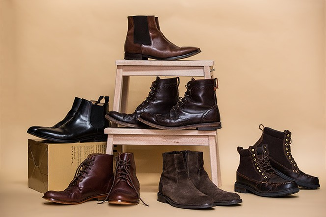
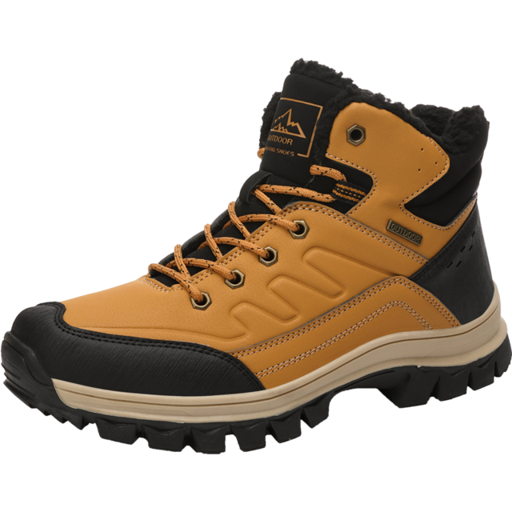
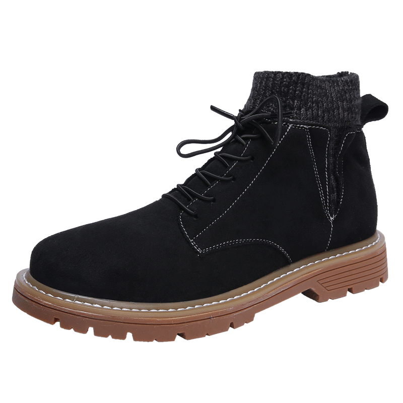
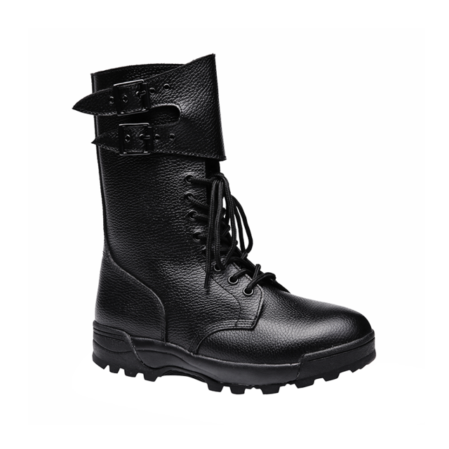

Podemos comenzar recordando la historia de este tipo de calzado.
Su principal función es cubrir el pie y el tobillo, aunque algunas llegan a cubrir buena parte de la pantorrilla hasta la rodilla. La mayoría de las botas tiene un tacón, las de mujeres pueden ser más altas.
Tradicionalmente están hechas de cuero o plástico, pero hay muchos otros materiales disponibles que mencionaremos más adelante. Las botas nacieron con cierta funcionalidad, proteger los pies y piernas del agua (lluvia), frío, barro y de otros problemas (las botas de trabajo).

Bota militar
Bota de vestir
Botin
